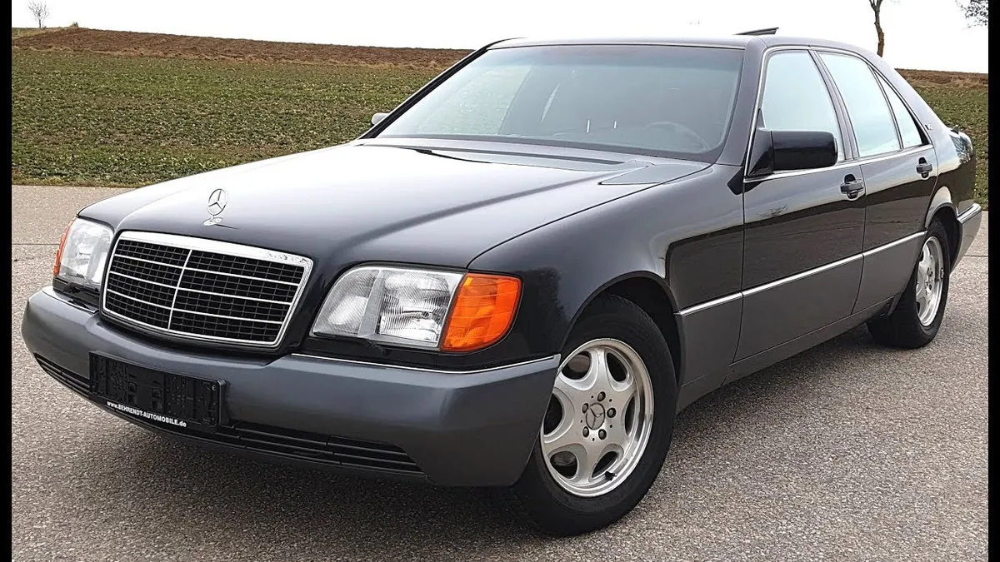
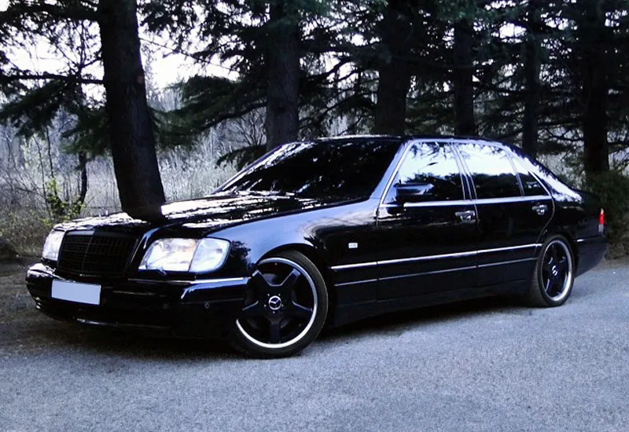
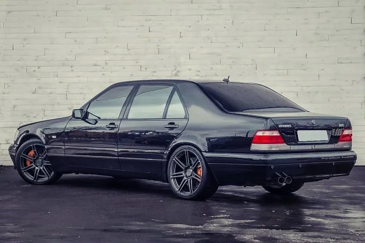

mersedes-benz w 140
легенда 90х в двух словах
Тем, кто не в курсе - этот представительский автомобиль производился в 1991–1998 гг. и уже тогда благодаря своему внушительному виду и техническому совершенству стал легендой. Более того, немало людей считает W140 последним из настоящих Mercedes, поскольку в ту пору автопроизводители меньше шли на поводу у маркетологов и больше заботились о качестве и надежности продукции. Говорят, в модель вложили огромные средства, но автомобиль так и не окупился. Зато его самая мощная модификация S 600 с 6-литровым 12-цилиндровым двигателем надолго стала символом престижа и власти.
Brabus 7.3S – в основе своей Mercedes-Benz S 600 – легенда в квадрате. Двигатель объемом 6 л был расточен до 7,3 л (!) и получил новые "внутренности". Результат впечатляет даже ныне: 582 л.с., 772 Нм, 4,9 с до "сотни" и максимальная скорость 305 км/ч. Двигатель трижды побывал в книге рекордов Гиннеса. Впервые в октябре 1996 Brabus E V12, базирующийся на Mercedes Е класса (В210) попал в "Книгу Гиннеса" как "самый быстрый в мире седан" с максимальной скоростью 330 км/ч. Тот же самый двигатель Brabus 7.3 S мощностью 582 л.с., еще раз попал на страницы книги рекордов, когда разогнал до рекордных для фургона 320 км/ч Mercedes T V12. И еще один рекорд двигателя в 2001-ом, основанного на базе Mercedes M-Class, получившего 7,3 литра двигатель (582 л.с.) и максималку 260 км/ч, что для класса "4Х4" стало очередным рекордом.Компанию Brabus представлять тоже нет необходимости. Она основана в 1977 г. в Боттропе, а ее название сложено из начальных букв фамилий основателей – Клауса Бракмана и Бодо Бушмана. Фирма давно обосновалась в Книге рекордов Гиннесса как производитель самых быстрых авто на базе Mercedes-Benz. И ключевое слово здесь – “производитель”, так как просто тюнингом доработку автомобиля, о котором пойдет речь, назвать нельзя.
- серия флагманских моделей S-класса немецкой
торговой марки Mercedes Benz.
- Серия пришла на смену автомобилям
Mercedes-Benz W126
- Новая модель принесла много
новшеств серии
Характеристики Mercedes-Benz W140 7.3 BRABUS
| МОДЕЛЬ |
brabus 7.3 |
| страна-производитель |
германия |
| тип кузова |
седан |
| ДВИГАТЕЛЬ |
мощный |
| расположение двигателя |
спереди-продольно |
| рабочий объем |
7580 |
| кол-во цилиндров |
12 |
| транасмиссия |
автомвтическая,четырехступенчетая |
| ДИНАМИКА |
ебейшая |
| максимальная скорость,км/ч |
305 |
| разгон до 100 км/ч,сек |
4.9 |
| тип движения |
не едет,а плывет |
Показатели серийного S 600 куда скромнее: 394 л.с., 570 Нм, 6,6 с до 100 км/ч и “максималка” 250 км/ч, правда, ограниченная электроникой. А ведь эти "лошади" получены с атмосферного силового агрегата – эпоха турбин и компрессоров тогда еще не наступила. Конечно, доработали и тормоза, точнее – установили новую систему Alcon с охлаждаемыми суппортами и перепрограммированной ABS. Кроме того, модернизировали систему выхлопа, улучшили охлаждение коробки передач и переделали подвеску, причем задача у мастеров Brabus стояла архисложная: автомобиль обязан быть устойчивым на скорости 300 км/ч, но плавность хода при этом не должна страдать.
более подробная информация об автомобиле
внешние отличия линейки Mersrdes-Benz w 140

модель s 600 отличалась несколькоми накладками на капот и крылья и шильдиками на крышке багажника

модель от одноименной студии тюнинга amg отличалсь более широкими арками крыльев и мела небольшой спойлер

brabus модель в которой поработали на внешней часьтю и были заменены части кузова такие как:капот. крышка багажника.крыша.задние двери
Леонардо да Винчи говорил: "Ангела от смерти отличишь по деталям".
Внешне разница между простым "шестисотым" и BRABUS, конечно же, есть. Но она не имеет значения, потому что суть не во внешних отличиях. Суть — внутри. И фирменный знак этой сути — золотая табличка на двигателе. Если она есть, считайте, что "шестисотого" уже нет. Канул в Лету. А вместо него — BRABUS 7.3.
Под автотюнингом чаще всего подразумевается некая "косметическая" операция, которую специализированные автомобильные ателье проделывают с вашей машиной, после чего она приобретает свой, присущий только ей, внешний облик. Когда речь идет о BRABUS, все обстоит совсем иначе. Это немецкое автоателье подвергает "рядовые" автомобили Мерседес-Бенц так называемому глубокому тюнингу. Причем основные изменения практически не видны. Внешние признаки вторичны, и их можно пересчитать по пальцам.
BRABUS от серийных "мерсов" отличают бамперы со спойлерами, декоративная решетка радиатора, накладки на порожках и еще скромные такие, почти незаметные шильдики BRABUS. Ну и, конечно же, 20-дюймовые колесные диски легкосплавного моноблока с теми же фирменными буквами
✈